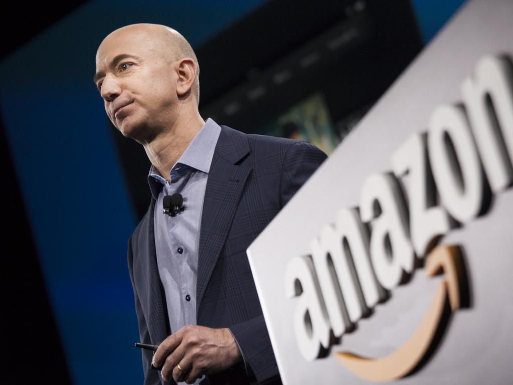

Jeff Bezos
"Get Big Fast"
Amazon Man
Here's a time line of Bezo's life and career:
- 1964 - Born in Albuquerque, New Mexico, raised in Houston, Texas
- 1986 - Leaves Princeton University with two degrees Electrical Engineering and Computer Science
- 1986 - After Princeton Bezos is offred jobs at Intel and other big companies. Bezos decides to work for Fitel, a finacial technical startup. After two years at Fitel, he is promoted to Head of Development then he is promoted to Director of Customer Service before leaving two years later.
- 1990 - Bezos leaves the finance tech startup and goes to work for Bankers Trust. Jeff works in the the banking industry for about two years.
- 1993 - Jeff Bezos leaves the newly created headgefund company D. E. Shaw & Co and decides to start an online bookstore. He accepted an estimated $300,000 from his parents to start the company, writing his business plan on an airplane flight from New York to Seattle Washington. The company was originally named, "Cadabra" but later Bezos settled on "Amazon" After the Amazon River. It is said that Bezos liked that "Amazon" started with "A".
- 1996 - Bezos take the company public.
- 1998 - Amazon begins to sell music and video aside from just books.
- 2000 - Blue Origin space travel and development company is founded.
- 2002 - Bezos starts Amazon Web Services (AWS). Initially, the function of AWS was compiling data from weather channels and website traffic.
- 2007 - Amazon creates a division called Amazon Kindle. According to Time magazine write in 2008, Bezos goal was to create the same flow state found in video game simulations in book.
- 2011 - Jeff Bezos receives Innovation Award for the Amazon Kindle from "The Economist."
- 2013 - Bezos secured a $600 million contract with the Central Intelligence Agency (CIA) on behalf of Amazon Web Services. That same year, Bezos purhases The Washington Post for a reported $250 million. The newspaper was offically purchased by Nash Holdings, a limited liability holding company established by Bezos specifically for the purhcase.
- 2015 - November, Blue Origin's New Shepard space vehicle successfully rocketed into space and reached its planned test altitude of 329,839 feet (100.5 kilometers) before executing a vertical landing back at the launch site in West Texas.
- 2017 - Jeff Bezos wealth supasses that of Bill Gates in October of that year as its Amazon shareprice increase 2.5%.
- 2018 - Amazon increases minimum wages for all its workers to $15.00. The wage increase came after political scrunity from former presidential runner Bernie Sanders. Sanders highlighted research found by non-profit non-profit group New Food Economy which found that one third of Amazon workers in Arizona, and one tenth of Amazon workers in Pennsylvania and Ohio, relied on food stamps.
- 2018 After a 14-month competitive search for a second location for its Amazon headquarters away from Seattle Washington, Amazon settles on expanding to Arlington, Virginia just outside of Washington, DC and New York.
Amazon has 14 leadership principals. Customer Obsession is the first principal," Leaders start with the customer and work backwards. They work vigorously to earn and keep customer trust. Although leaders pay attention to competitors, they obsess over customers."
-- Amazon Leadership Princials /cite>